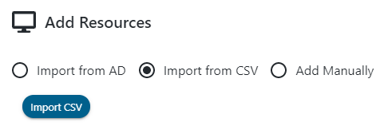
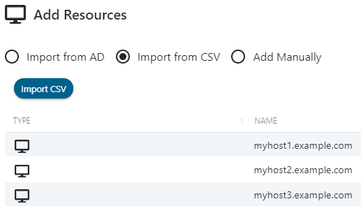

Summary
Resources can be imported to SbPAM from a CSV file, where each line of the CSV is a distinct DNS hostname.
Instructions
Create a CSV file that contains the distinct DNS hostname of the resources you would like to add to SbPAM. For example:
In SbPAM, navigate to the Resources page. Click + Add, then select the Import from CSV radio button at the top of the dialog that appears.

Click Import CSV, then browse to and select the CSV of DNS hostnames you would like to import to SbPAM.

The Add Resources page will now list the resources found in the CSV, with a row for each DNS hostname.
In the bottom-right dropdown, select a Service Account that has previously been added to SbPAM. This Service Account will be used to scan each resource being added.
When the desired Service Account is selected, click + Add to start the resource import. You can wait and view the status of each host scan, or close the window to allow scanning to continue in the background.
As resources are imported, you will see them appear on the Resources page, along with information gathered by the host scan such as Operation System, DNS Host Name, and IP Address.